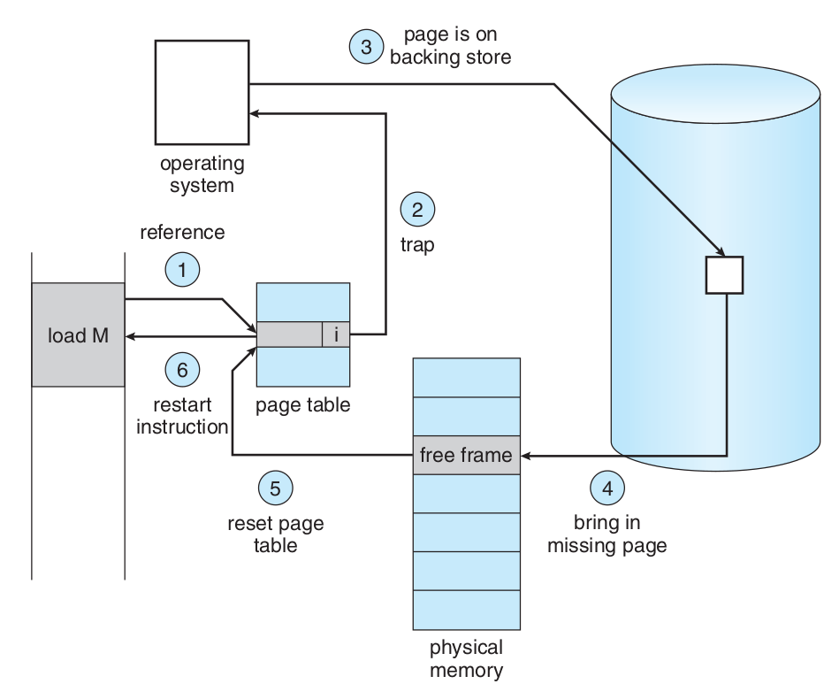
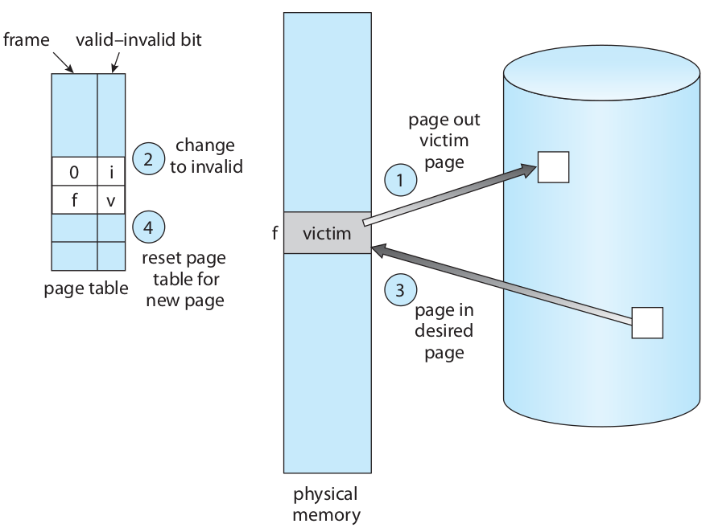

Operating Systems
Virtual Memory
Ahmad Yoosofan
University of Kashan
Virtual Memory

Virtual Memory Addressing



Effective Access Time of Virtual Memory
- effective access time = (1 − p) × ma + p × page fault time.
- effective access time = (1 − p) × (200) + p (8 milliseconds) = (1 − p) × 200 + p × 8,000,000 = 200 + 7,999,800 × p
- 220 > 200 + 7,999,800 × p,
- 20 > 7,999,800 × p,
- p < 0.0000025
Allocation of frames
- On demand
- prepaging
روشهای تخصیص تعداد قاب به هر فرآیند
- مجموعهٔ مقیم برای هر فرآیند.
- تعداد ثابت fixed-allocation
- تعداد متغیر variable-allocation
- بخش کردن قابها میان فرآیندها
- تعداد برابر
- تعداد به نسبت اندازهٔ فرآیند
- چگونگی برگزیدن یک قاب برای تخصیص به یک فرآیند
- تخصیص محلی
- تخصیص سراسری
سیاستهای پاک کردن
- پاک کردن درخواستی demand cleaning
- پیش پاک کردن precleaning
Page Replacement


Frame Allocation
- frame-allocation algorithm and a page-replacement algorithm.
- reference string.
- 0100, 0432, 0101, 0612, 0102, 0103, 0104, 0101, 0611, 0102, 0103, 0104, 0101, 0610, 0102, 0103, 0104, 0101, 0609, 0102, 0105
- At 100 bytes per page, this sequence is reduced to the following reference
- string:
- 1, 4, 1, 6, 1, 6, 1, 6, 1, 6, 1
- تعداد خطای نبود صفحه بسته به تعداد قابهای تخصیص داده شده

FIFO

Belady’s anomaly

Optimal

Not Recently Used Page(NRU)

NRU vs LRU
Least Recently Used(LRU)
How to Impolement LRU
- counters
- stacks
LFU
Least Frequently Used
MFU
Most Frequently Used
page-replacement algorithm is based on the argument that the page with the smallest count was probably just brought in and has yet to be used
Use of a stack to record the most recent page references
Second chance (clock)
Simplest implementation of NRU and LRU by using one bit
- access bit,
- reference bit, or
- use bit
Some called this NRU
- as an approximation to LRU, select one of the pages that has not been used recently (as opposed to identifying exactly which one has not been used for the longest amount of time)
- keep one bit called the "used bit" or "reference bit", where 1 => used recently and 0 => not used recently
- variants of this scheme are used in many operating systems, including UNIX and MacIntosh
- most variations use a scan pointer and go through the page frames one by one, in some order, looking for a page that has not been used recently.

Modefied Clock
Enhanced Second Chance
By the usage of
- modify bit or
- dirty bit
("modify bit", "use bit" or "access bit")
- Form 1
- Search for (0, 0)
- Search for (1, 0) and access bit = 0
- goto 1
- Form 2
- Search for (0, 0)
- Search for (1, 0) and access bit = 0
- Search for (0, 0)
- Search for (1, 0)
PAGE BUFFERING
Thrashing

mov A, B
Principle of Locality(Locality of Reference)

Two kinds of locality
- Temporal locality: recently referenced items are likely to be referenced in near future
- Spatial locality: Items with nearby addresses tend to be referenced close together in time.
Locality example
- Program data
- Temporal: the variable sum
- Spatial: variable a[i+1] accessed soon after a[i]
- Instructions
- Temporal: cycle through the for-loop repeatedly
- Spatial: reference instructions in sequence
Locality Makes Caching Effective
- Cache
- Smaller, faster storage device that acts as a staging area
- … for a subset of the data in a larger, slower device
- Caching and the memory hierarchy
- Storage device at level k is a cache for level k+1
- Registers as cache of L1/L2 cache and main memory
- Main memory as a cache for the disk
- Disk as a cache of files from remote storage
- Locality of access is the key
- Most accesses satisfied by first few (faster) levels
- Very few accesses go to the last few (slower) levels
Working Set Model

روش شناسایی کوبیدگی به کمک فراوانی خطای نبود صفحه
page-fault frequency ( PFF )

روشهای رویارویی با کوبیدگی پس از شناسایی آن
- معلق کردن تعدادی فرآیند برگزیده شده
- نپذیرفتن فرآیند جدید
پروندههای نگاشت شده به حافظه (Memory-Mapped Files)
ورودی و خروجیهای نگاشت شده به حافظه
(I/O-Mapped Files)
- Graphic card
- Network
قفل کردن برخی صفحهها
Lock pages
اثر نوع برنامهنویسی و کامپایلر بر حافظهٔ مجازی
1 void row_by_row(void){ 2 double xa[1000][1000]; 3 int i,j; 4 for(i=0;i<1000;i++) 5 for(j=0;j<1000;j++) 6 xa[i][j]=i*1000+j; 7 }
1 void column_by_column(void){ 2 double xa[1000][1000]; 3 int i,j; 4 for(j=0;j<1000;j++) 5 for(i=0;i<1000;i++) 6 xa[i][j]=i*1000+j; 7 }
Copy-on-Write

References(I)
- http://os-book.com/
- http://blog.cs.miami.edu/burt/2012/10/31/virtual-memory-pages-and-page-frames/
- https://www.javatpoint.com/os-segmented-paging
- https://www.geeksforgeeks.org/difference-between-internal-and-external-fragmentation/
- https://binaryterms.com/contiguous-memory-allocation-in-operating-system.html
- https://github.com/mor1/ia-operating-systems/wiki/06-Virtual-Addressing
- https://github.com/mor1/ia-operating-systems
- https://slideplayer.com/slide/7084682/
References(II)
- http://images.bit-tech.net/content_images/2007/11/the_secrets_of_pc_memory_part_1/hei.png
- https://answers.microsoft.com/en-us/windows/forum/windows_10-performance/physical-and-virtual-memory-in-windows-10/e36fb5bc-9ac8-49af-951c-e7d39b979938
- https://upload.wikimedia.org/wikipedia/commons/c/c2/Write-back_with_write-allocation.svg
- https://www.byclb.com/TR/Tutorials/dsp_advanced/ch1_1_dosyalar/image025.jpg
- https://en.wikipedia.org/wiki/File:Cache,hierarchy-example.svg
- https://tutorialspoint.dev/image/Translation.png
- https://www.cs.princeton.edu/courses/archive/spr11/cos217/lectures/18MemoryMgmt.pdf
- http://harmanani.github.io/classes/csc320/Notes/ch05.pdf
- https://www.cs.princeton.edu/courses/archive/spr11/cos217/lectures/18MemoryMgmt.pdf
- https://www.mvorganizing.org/what-is-principle-of-locality-in-operating-system/
- https://en.wikipedia.org/wiki/Locality_of_reference
- http://www2.cs.uregina.ca/~hamilton/courses/330/notes/memory/page_replacement.html
- https://prepinsta.com/operating-systems/page-replacement-algorithms/least-recently-used-lru-algorithm/
{kind=link}
{kind=link}
{kind=link}
{kind=link}
{kind=link}